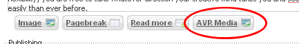
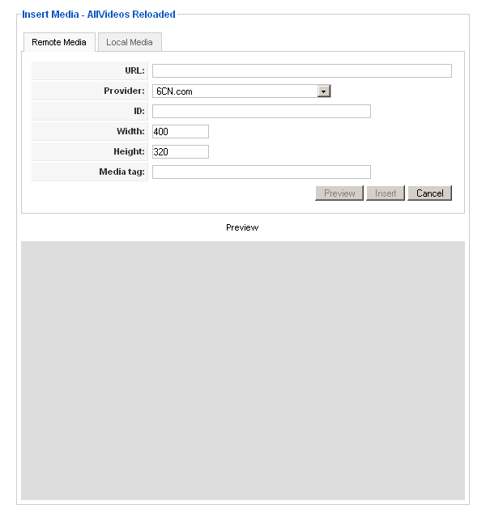
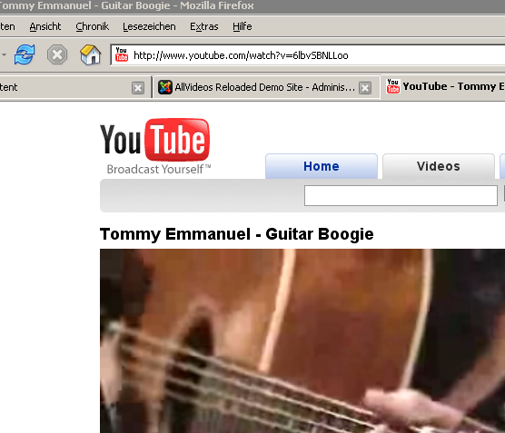
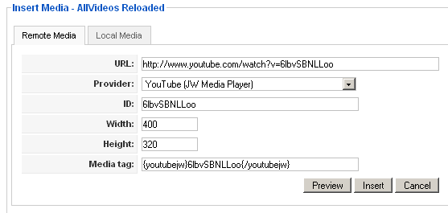
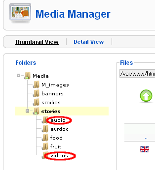
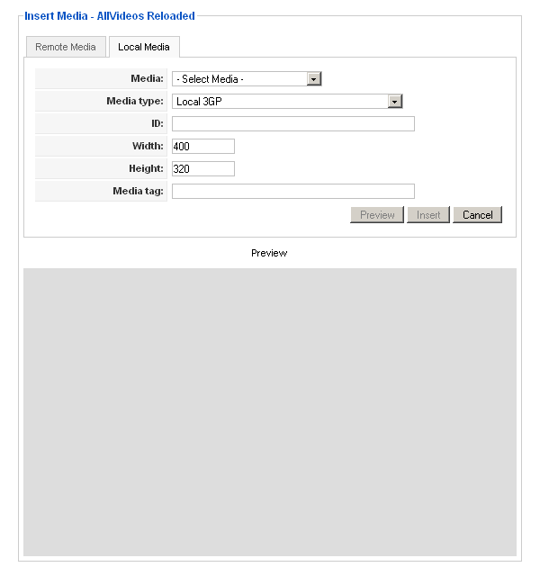

|
Page 8 of 11
Using the AVR Media buttonAs of Version 1.2, AllVideos Reloaded (AVR) includes an editor-xtd plugin which provides an editor button for easy embedding of media in your content. After installation of AVR, the button is automatically added to the other buttons below your editow window. If you use Joomla's standard backend template khepri, that button looks like this:  If you click that button, you should see the following dialog:  Inserting remote mediaIn the above dialog, you can insert either remote or local media. For inserting remote media, simply paste the URL of the page showing the desired video at the video-sharing provider into the first text field. For example: If you want to embed the following video from YouTube into your article,  then simply paste the text http://www.youtube.com/watch?v=6lbvSBNLLoo into the field labeled URL. After that, hit the RETURN key. This triggers AVR's automatic recognition and the rest of the form will be filled like this:  As you can see, the fields Provider, ID and Media tag have now changed and both buttons Preview and Insert have changed their state to enabled. (Previously, they have been disabled). If you like to add custom attributes, you can do so now. To verify the effects of any custom attribute, you can use the Preview button. If you are satisfied with the video's appearance, finally click the Insert button. This copies the content of the Media tag into the editor at the current cursor position and closes the dialog. Inserting local mediaBefore inserting local media, you obviously have to upload it to your server. By default, AllVideos Reloaded uses two special folders named audio and videos for this. These folders have to be created in advance in Joomla's Media manager (or a similar tool) inside Joomla's imges/stories like this:  After that, you can upload media files into those folders. Plain audio files (mp3, wma) should be stored in the folder named audio while everything else (videos, playlists) goes into the folder named videos. Uploading is not part of AllVideos Reloaded, so again, you should use Joomla's Media manager (or a similar tool) for doing that. By default, Joomla's media manager is quite restrictive regarding supported file types. In Joomla's global configuration, you have to add file types of the desired media files in order to be able to upload these files. To insert local media, you first invoke the same dialog and then select the Local Media tab. The dialog now looks like this:  In the combo box Media at the top, you now can select the previously uploaded media file. After selecting the file, the rest of the dialog will be completed. Again, the field Media tag shows the tag to be used and you can complete the action just like with remote media described above. |
|
| Last Updated ( Monday, 07 July 2008 22:29 ) |